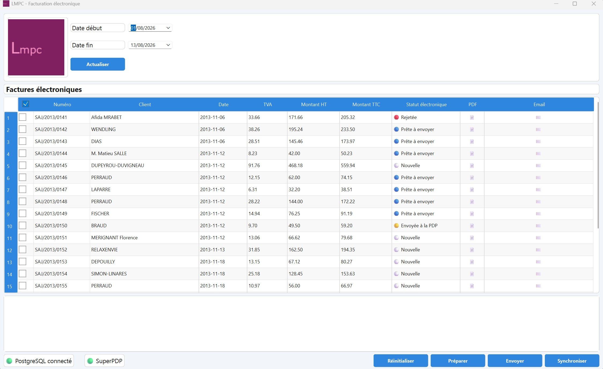

Roustor en pratique
Roustor transforme simplement vos factures existantes en factures électroniques conformes, puis les transmet à votre plateforme de dématérialisation partenaire.
Le besoin de la LMPC
La LMPC utilise aujourd’hui OpenERP pour gérer sa facturation. L’objectif n’est pas de remplacer cet outil, mais de lui permettre de répondre aux nouvelles obligations liées à la facturation électronique.
Roustor s’insère donc dans le processus existant et prend en charge les opérations nécessaires à la production et à la transmission des factures électroniques.
Un fonctionnement simple
Roustor récupère les factures produites par l’ERP et accompagne leur transformation jusqu’à leur transmission électronique.
Récupération
Les factures sont récupérées depuis le système de gestion existant.
Génération
Roustor génère une facture au format Factur-X, associant le document PDF aux données structurées de la facture.
Validation
La facture est contrôlée afin de vérifier sa conformité avant son envoi.
Transmission
Une fois validée, la facture est transmise à la plateforme de dématérialisation partenaire.
Roustor au quotidien
L'application permet de suivre les factures et leur état tout au long du processus.

Un suivi de chaque facture
Roustor conserve l'état de chaque facture au cours de son traitement. Il est ainsi possible de savoir si une facture a été générée, validée, envoyée ou acceptée par la plateforme.
En cas de rejet ou d'erreur, l'information est également conservée afin de faciliter le diagnostic et le traitement de la facture.
Une transition sans bouleverser l'existant
Roustor a été conçu pour s'intégrer au fonctionnement actuel de l'entreprise et accompagner progressivement la mise en place de la facturation électronique.
En savoir plus